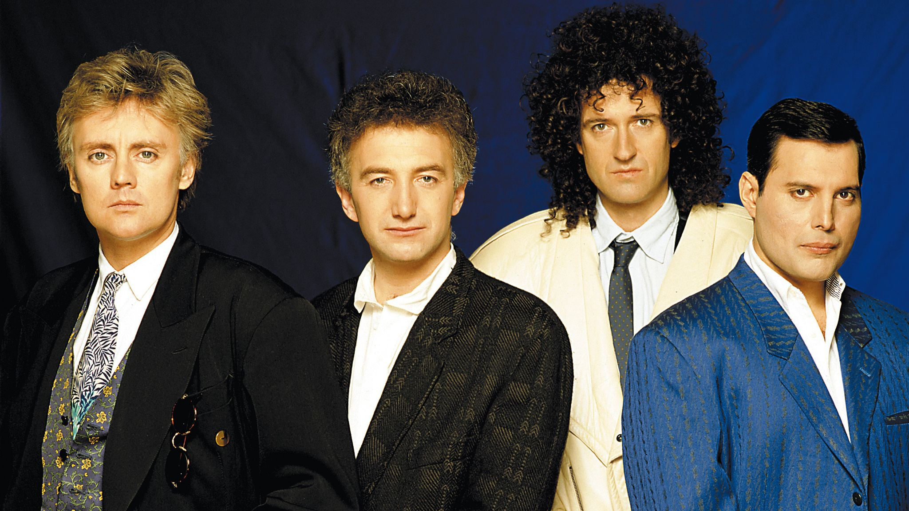

Published on August 7, 2023
Queen are a British rock band formed in London in 1971 and are one of the most commercially successful musical acts of all time. The group originally consisted of Freddie Mercury, (lead vocals), Brian May (lead guitar, vocals), John Deacon (bass guitar), and Roger Taylor (drums, vocals). Queen’s initial works were chiefly glam rock, heavy metal and progressive rock orientated, however with time the band incorporated diverse and innovative styles in their music, exploring the likes of vaudeville, electronic music and funk. The band digressed from using progressive themes in their music in the mid-1970s, with more conventional and radio-friendly works bringing them greater success. Throughout the 1970s, Queen disclosed the absence of synthesisers on their albums, yet their style continued to evolve. They eventually moved away from said approach in the 1980s, reflecting their experimental approach to music.
Brian May and Roger Taylor had been playing together in a band named Smile. Freddie Mercury (then known by his birth name of Farrokh Bulsara) was a fan of Smile, and encouraged them to change their name to ‚Queen’. Mercury himself joined the band shortly thereafter, adopted his familiar stage name, and John Deacon was recruited prior to recording their first album. Queen enjoyed success in the UK during the early 1970s, but it was the release of Sheer Heart Attack (1974) and A Night at the Opera (1975) that gained the band international success. The latter featured „Bohemian Rhapsody”, which stayed at number one in the UK charts for nine weeks. In 1991 Mercury died of bronchopneumonia, a complication of AIDS, and Deacon retired in 1997. Since then May and Taylor have infrequently performed together, including a collaboration with Paul Rodgers under the name Queen + Paul Rodgers. The band has released a total of 18 number one albums, 18 number one singles, and 10 number one DVDs worldwide making them one of the world’s best-selling music artists. They have been honoured with seven Ivor Novello awards and were inducted into the Rock and Roll Hall of Fame in 2001. In 2009, the band’s record label EMI reported their worldwide album sales as over 300 million; a figure cited by numerous independent sources.